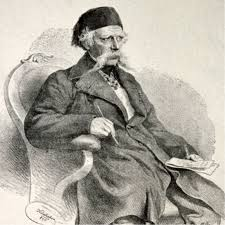

Вук Стефановић Караџић (1787–1864) један је од најзначајнијих културних прегалаца у српској историји. Рођен у сељачкој породици у доба великих промена и борбе за ослобођење од турске власти, Вук је својим радом поставио темеље модерног српског језика, књижевности, образовања и културе. Био је реформатор, лексикограф, сакупљач народних умотворина, историчар, учитељ, али пре свега – човек народа. Целог живота борио се за то да писменост не буде привилегија појединаца, већ право свих.
